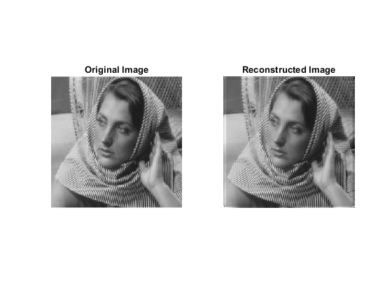

Contents
Question 1 (Assignment 3)
clc
clear all
close all
Part (A)
rng(0);
img = imread("barbara256.png");
img=double(img);
[d1,d2] = size(img);
img_n=img+sqrt(3)*randn(d1,d2);
phi = eye(64);
psi = kron(dctmtx(8)', dctmtx(8)');
A = phi*psi;
img_rt = zeros(d1, d2, 'double');
img_ag = zeros(d1, d2, 'double');
alpha = floor(eigs(A'*A,1)) + 1;
lambda = 1;
iterations = 150;
for i=1:d1-7
for j=1:d2-7
y = phi * reshape(img_n(i:i+7,j:j+7), [8*8 1]);
t = zeros(size(A, 2), 1);
limit = lambda/(2*alpha);
for k=1:iterations
temp1=t + (A'*(y - A*t))/alpha;
t=sign(temp1).*(max(0, abs(temp1)-limit));
end
img_rt(i:i+7,j:j+7) = img_rt(i:i+7,j:j+7) + reshape(psi * t, [8 8]);
img_ag(i:i+7,j:j+7) = img_ag(i:i+7,j:j+7) + ones(8,8);
end
end
img_rt(:,:) = img_rt(:,:)./img_ag(:,:);
img_rt(img_rt < 0) = 0;
img_rt(img_rt > 255) = 255;
final_rmse=norm(img_rt(:,:) - img(:,:), 'fro')/norm(img(:,:), 'fro');
fprintf('RMSE (Part A) : %f\n', final_rmse );
figure();
subplot(1,3,1)
imshow(cast(img, 'uint8'));
title("Original Image")
subplot(1,3,2)
imshow(cast(img_n, 'uint8'));
title("Noisy Image")
subplot(1,3,3)
imshow(cast(img_rt(:,:), 'uint8'));
title("Reconstructed Image")
RMSE (Part A) : 0.011715
Part (B)
clear all
rng(0);
img = imread("barbara256.png");
img=double(img);
[d1,d2] = size(img);
phi = randn(32,64);
psi = kron(dctmtx(8)', dctmtx(8)');
A = phi*psi;
img_rt = zeros(d1, d2, 'double');
img_ag = zeros(d1, d2, 'double');
alpha = floor(eigs(A'*A,1)) + 1;
lambda = 1;
iterations = 150;
for i=1:d1-7
for j=1:d2-7
y = phi * reshape(img(i:i+7,j:j+7), [8*8 1]);
t = zeros(size(A, 2), 1);
limit = lambda/(2*alpha);
for k=1:iterations
temp1=t + (A'*(y - A*t))/alpha;
t=sign(temp1).*(max(0, abs(temp1)-limit));
end
img_rt(i:i+7,j:j+7) = img_rt(i:i+7,j:j+7) + reshape(psi * t, [8 8]);
img_ag(i:i+7,j:j+7) = img_ag(i:i+7,j:j+7) + ones(8,8);
end
end
img_rt(:,:) = 2*img_rt(:,:)./img_ag(:,:);
img_rt(img_rt < 0) = 0;
img_rt(img_rt > 255) = 255;
final_rmse2=norm(img_rt(:,:) - img(:,:), 'fro')/norm(img(:,:), 'fro');
fprintf('RMSE (Part B) : %f\n', final_rmse2 );
figure();
subplot(1,2,1)
imshow(cast(img, 'uint8'));
title("Original Image")
subplot(1,2,2)
imshow(cast(img_rt(:,:), 'uint8'));
title("Reconstructed Image")
RMSE (Part B) : 0.061917

End (Question 1)